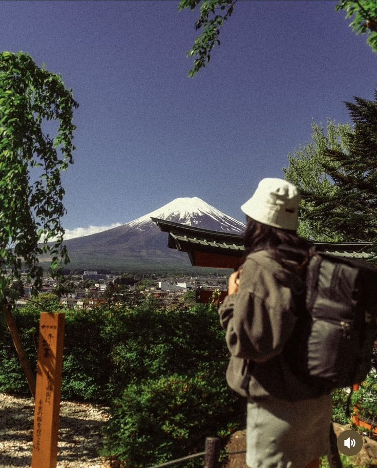
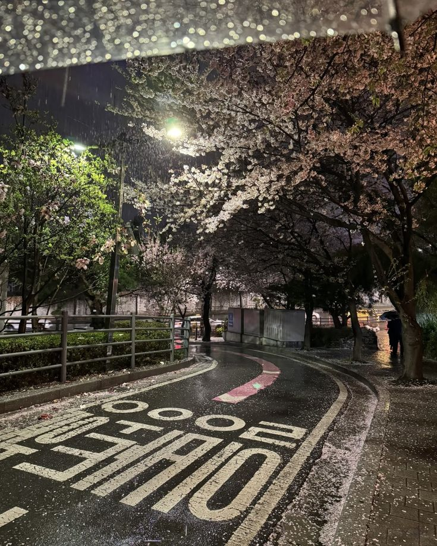

SEOUL · CAFE
SEOUL · CAFEคาเฟ่ · เกาหลี
คาเฟ่ในโซลที่เหมือนหลุดออกมาจากซีรีส์
โกดังเก่า อิฐแดง และมุมริมหน้าต่างที่ทำให้การแวะคาเฟ่เป็นอีกหนึ่งฉากประทับใจ
อ่าน 6 นาทีเกาหลีใต้
อ่านบทความ →อ่านคู่มือและเก็บไอเดียเที่ยวตามรอยซีรีส์จากหลายจุดหมาย
ไอเดียเที่ยวตามรอยซีรีส์และคู่มือจากแต่ละจุดหมาย
SEOUL · CAFEโกดังเก่า อิฐแดง และมุมริมหน้าต่างที่ทำให้การแวะคาเฟ่เป็นอีกหนึ่งฉากประทับใจ
 OTARU · WINTER
OTARU · WINTERรู้จักการเดินทาง ช่วงเปิดไฟ และการเตรียมตัวให้พร้อมก่อนเจอหิมะ

FUJI · PHOTOตามหาจังหวะฟ้าเปิดและเงาสะท้อนภูเขาไฟฟูจิบนผืนน้ำ
 CHONGQING · NIGHT
CHONGQING · NIGHTวางลำดับจุดแวะชมแสงไฟในเมืองภูเขาริมแม่น้ำ
 PHUKET · OLD TOWN
PHUKET · OLD TOWNเดินชมสถาปัตยกรรมชิโน-โปรตุกีส แวะชิมขนม และพักคาเฟ่

TRAVEL · TIPSเช็กลิสต์ของจำเป็นและวิธีแยกของแห้งให้หยิบใช้ง่ายระหว่างทริป
SEASON · FLOWERSทำความรู้จักช่วงดอกไม้บานเพื่อเลือกช่วงเวลาเดินทางได้เหมาะขึ้น
KOREA · STAYสิ่งที่ควรรู้เกี่ยวกับที่พักฮันอกและการเตรียมตัวก่อนเข้าพัก